The state
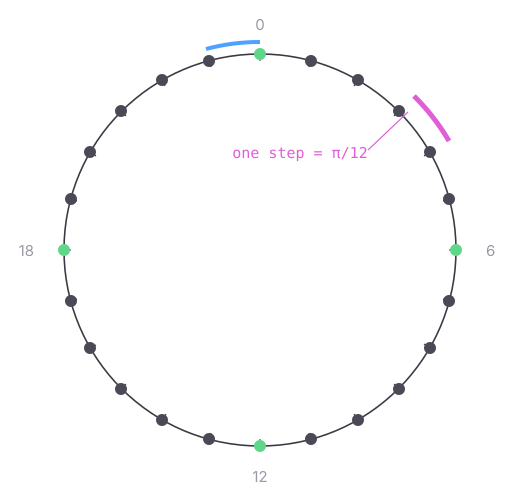
t ∈ {0 … 23}
a state, not a number — t ± 1 follows a link. 6 is a quarter turn, 12 a half
angle = (π/12) · t
the only thing that leaves this kind
23 → 0 — one link like any other, and the only reason the ring closes
The tilt as a state machine — 24 states, two links out of each
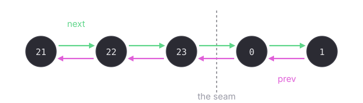
next prev — the only two moves there are
a turn FOLLOWS one of these links, so it cannot land between two states or off the ring, and no rule anywhere adds 1 or takes a modulus
the seam in the middle is 23 → 0. Nothing detects it and no rule mentions it — the last state's next simply IS the first, fixed when the ring was built
The mode as a state machine — three modes, four transitions

setting is where a node starts and what a reset restores — it is the zero value, so a node is in it without anything having to put it there
there is NO edge between perpendicular and parallel: a chosen mode sticks, and a second choice arriving mid-run is ignored
every case, mode by mode and length by length, is on Cases
What is read off the tilt
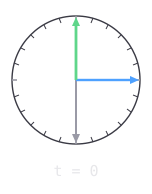
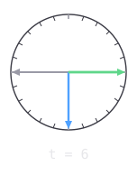

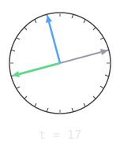
t — the tilt
t + 6 — the normal, and what it sends
t + 12 — the bottom
links, not sums — the triad turns as one, and nothing wraps
The angle length, and what it says the pair is at
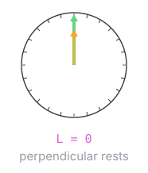


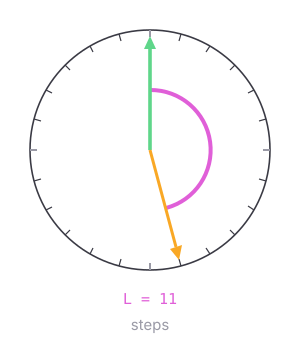

t — this node's own tilt
a — the direction that arrived
L — short for angleLength, the slots between them the short way round, so never more than 12
the two slots have TWO arcs between them, one each way round, and L is the shorter — that choice is what min is for. It is not wrap handling: a tilt is a state on the ring and cannot leave it, so turning never does arithmetic at all
0 and 12 are perpendicular's two rests, 6 is parallel's one; every other length — acute below the quarter, obtuse above it — is ordinary to both, and gets turned over
integers, so exact — no dot product, no epsilon to tune
Where each mode rests
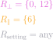
The two questions an arrival asks
The turn
The other updates
Choosing the mode — the only update that reads the arrival's own tilt
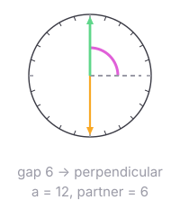

t — this node's own tilt
a — what arrived, which is the partner's NORMAL, already a quarter turn off its tilt
the partner's own tilt, backed out of the arrival — dashed, because it is inferred and never sent
this is the one place the gap between the two TILTS is measured; everything else measures the arrival directly
it runs once, on the first arrival, and the answer sticks until a reset
One step, worked
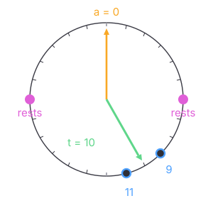
settle? L = 10 is not a resting length → no
up? down reaches 6 sooner than up does → no
t_after = t − 1 = 9
the two tilts whose angle length is a resting 6 for this arrival
the only two slots it can turn to — a tie turns up
A run, from START to the halt
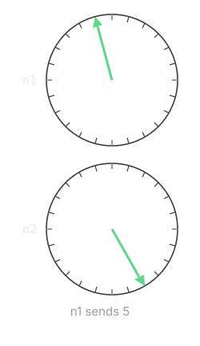
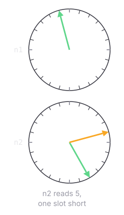
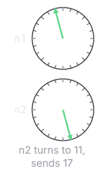

t — each node's own tilt
what just arrived at that node
both ends run R = { 6 }, chosen from the gap at the first arrival
one bead per send, and settling sends nothing
What a report puts on the frame
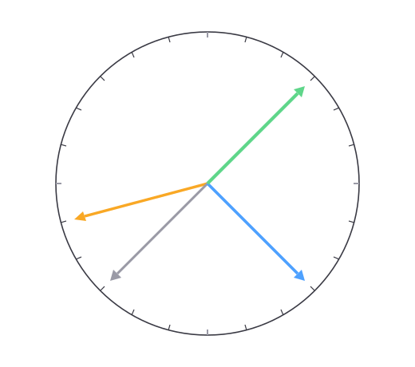
(π/12) · t — persisted, position.json
(π/12) · (t + 6) — a link, never stored
(π/12) · (t + 12) — a link, never stored
(π/12) · r — drawn when set, never
persisted
centre · reach · pole · ring axis — a tilt touches none of them
What a reset puts back
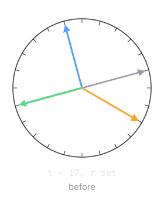

the tilt goes to 0 and the other two follow, being links off it
both queues emptied — a direction left waiting would step t straight back off 0
beads still crossing dropped · each node clears twice, and the marker's clear lands last
Where each rule lives — the names open the file at the definition
| file | definitions | |
| nodes/Node1/node.go | Update · applyTiltEdit · handleVectorCycle · stepFromVector · machineForGap · adoptMachine · coplanarNormal · bottomTilt · outgoingVector · syncTiltIndex · syncReceivedVector · clear · drainIn | |
| nodes/Node1/ring.go — the 24 states | tiltState · ring · at · arrivedState · seedState · angleLength · tiltMachine · restingLengths | |
| nodes/Wiring/tilt_vector_channel.go | PollRecvVector · SendVectorLatestNonBlocking · FullTurnThetaIdx | |
| nodes/Wiring/pair_node_self.go | EmitGeometryOnce · Step · SetTiltIndex · SetReceivedVector · ClearOutBeads | |
| nodes/Wiring/node_geometry.go | emitGeometry · writeStreamFrame · applyCenter | |
| nodes/wire/clock.go | Copy · SleepCycle · pulsesPerCycle · ApplySpeedNonBlocking | |